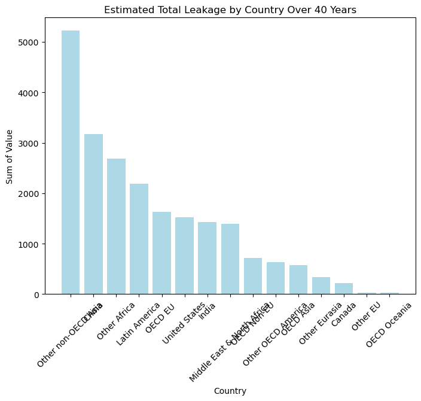

This dataset gives us predictions of the future plastic leakage for 15 different regions. According to OECD.stat, “Plastic leakages to aquatic environments and the subcategory transport to oceans are estimated by applying the methodology adapted from Lebreton and Andrady (2019), on OECD ENV-Linkages model outputs and plastic leakage from mismanaged and litter.” I have cleaned this data to only include the ocean data - NOT freshwater data.
This data consists of categorical and numerical data. The categorical data is location and water source and the numerical data is time and values (tonnes).
This data is crucial to my project as it shows what may happen if time is not invested into ocean sustainability, specifically, when it comes to plastic leakage.
It is important to note that location is split up into the following 15 unique values. OECD stands for Organization for Economic Co-operation and Development. 38 countries are currently members of the OECD. Listed below are the locations used in the dataset.
OECD Non-EU
Other OECD America
Other Africa
Other Eurasia
Latin America
OECD Asia
United States
Other non-OECD Asia
Middle East & North Africa
China
OECD EU
Other EU
OECD Oceania
Canada
India
Descriptive Statistics
Code
# Importing Dataimport pandas as pddata1a = pd.read_csv('/Users/kendallgilbert/dsan-5000-project-kendallgilbert180/dsan-website/5000-website/data/01-modified-data/cleandata1a.csv')# Summary Statisticsdata1a[["Value"]].describe()
Value
count
630.000000
mean
34.537254
std
38.067211
min
0.211856
25%
8.962933
50%
21.689714
75%
45.564320
max
219.560846
These summary statistics help us better understand our dataset. It is most important to take into account the number for the mean - 34.54. This number tells us the average million tonnes of plastic that will be leaked into the ocean each year from each location. It is also notable to look at the max - 219.56. This is the estimated value a location will leak into the ocean in one year.
Data Visualization
Code
import matplotlib.pyplot as plt#average Tones by Yearaverage_tonnes = data1a.groupby("Time")["Value"].mean()# Bar Chart - Average Tonnes Each Yearplt.figure(figsize=(8, 6))plt.bar(average_tonnes.index, average_tonnes.values, color='#ADD8E6')plt.xlabel("Year")plt.ylabel("Average Tonnes")plt.title("Average Tonnes Each Year (2019 - 2060)")plt.show()
Code
country_sum = data1a.groupby("Location")["Value"].sum()# Bar Chart - Sum of Values for Each Location country_sum = country_sum.sort_values(ascending=False)print(country_sum)plt.figure(figsize=(8, 6))plt.bar(country_sum.index, country_sum.values, color='#ADD8E6')plt.xlabel("Country")plt.ylabel("Sum of Value")plt.title("Estimated Total Leakage by Country Over 40 Years")plt.xticks(rotation=45)plt.show()
Location
Other non-OECD Asia 5219.555210
China 3171.411114
Other Africa 2683.444158
Latin America 2184.368092
OECD EU 1630.250955
United States 1517.991740
India 1431.290918
Middle East & North Africa 1388.940608
OECD Non-EU 712.730233
Other OECD America 628.464360
OECD Asia 578.911133
Other Eurasia 332.924609
Canada 222.498466
Other EU 32.281595
OECD Oceania 23.406731
Name: Value, dtype: float64

Code
#HeatMapimport seaborn as snsheatmap_data = data1a.pivot_table(index="Location", values="Value", aggfunc="sum")plt.figure(figsize=(10, 6))sns.heatmap(heatmap_data, cmap="YlGnBu", annot=True, fmt='g', cbar=True, linewidths=0.5)plt.title("Heatmap of Values by Location")plt.show()# Darker Colors = Higher SUM
Code
#Filtering Data to just show United States and Chinaselected_countries = ["United States", "China"]filtered_df = data1a[data1a["Location"].isin(selected_countries)]#Boxplot of United States and China Values plt.figure(figsize=(8, 6))sns.boxplot(x="Location", y="Value", data=filtered_df, palette="Set3")plt.xlabel("Country")plt.ylabel("Tonnes")plt.title("Boxplot United States and China")plt.show()import matplotlib.pyplot as pltplt.figure(figsize=(12, 6))sns.lineplot(x="Year", y="Value", hue="Location", data=filtered_df, palette="Set3")plt.xlabel("Year")plt.ylabel("Tonnes")plt.title("United States and China Values Over the Years")plt.legend(title="Country", loc="upper left")plt.show()
ValueError: Could not interpret value `Year` for parameter `x`
Time Value
Time 1.000000 0.341206
Value 0.341206 1.000000
Below I have included the correlation matrix. A correlation matrix is a statistical technique used to evaluate the relationship between two variables in a data set. I looked at the relationship between time and value (tonnes).
The correlation coefficient between “Time” and “Time” is 1.0. This makes sense as a corelation with itself will equal 1.0 also known as a perfect correlation.
The correlation coefficient between “Time” and “Value” is approximately 0.3412. This value suggests a positive correlation between “Time” and “Value”.
Identifying Outliers
Code
#Possible Outliers in 2060data_2060 = data1a[data1a["Time"] ==2060]plt.figure(figsize=(8, 6))plt.bar(data_2060["Location"], data_2060["Value"], color='#ADD8E6')plt.xlabel("Country")plt.ylabel("Value (Tonnes)")plt.title("Estimated Leakage for the Year 2060 by Location")plt.xticks(rotation=45)plt.show()
Within this dataset I am techniclly looking at only one numerical value that will help me answer my overall question (Value).
To identify possible outliers in the future, I created a bar graph to show which location will have the highest leakeage in the year 2060.
It is clear that the United States will have a significantly higher amount of plastic leakage into the ocean.
Methods and Findings
Overall, this dataset helps me answer my overall question on why ocean sustainability is necessary. This dataset allows viewers to understand that if action is not taken, the plastic leakage throughout the world will continue to increase.
A few key takeaways from the data visualitions created are:
The average tonnes per year across the world will continue to increase
Countries in Asia that are not part of the OECD are estimated to have the highest plastic leakage numbers in 2060
China and the United States also have high numbers when it comes to the total estimated amount of leakage in 2060
There is a positive correlation between time and tonnes, which makes sense
Overall, although this dataset was relatively simple, it helps answer the question of why humans need to focus on sustainability if they dont want to end up with millions of tonnes of plastics in our oceans.